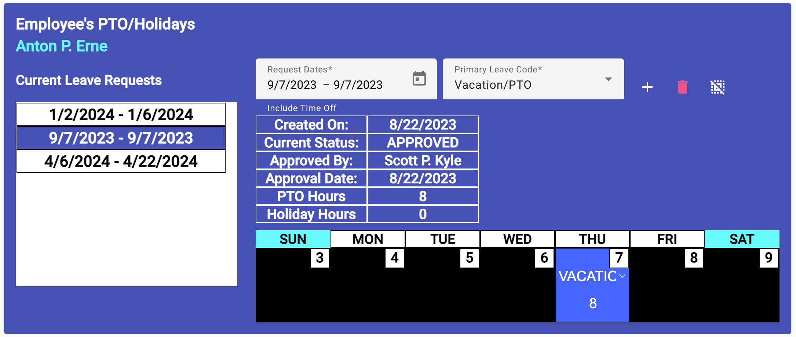

Leave Approval View
(Site Scheduler/Leadership only)
After a leave request is created and placed by the creator in the approval
cue, an email was sent to the site's approval authorities. As an approver,
site leadership and scheduler, you open the Leave Approval view (shown below)
to review and possibly approve the requestor's leave.

- CLick on the leave you want to review and possibly approve from the
list provided on the left side. The selected leave will display in the
leave request editor (right side).
-
You can make changes to their leave request, adjusting the overall
dates, and/or each day's leave code and hours.
-
Employee Editor Overview
Selecting an Employee to Edit